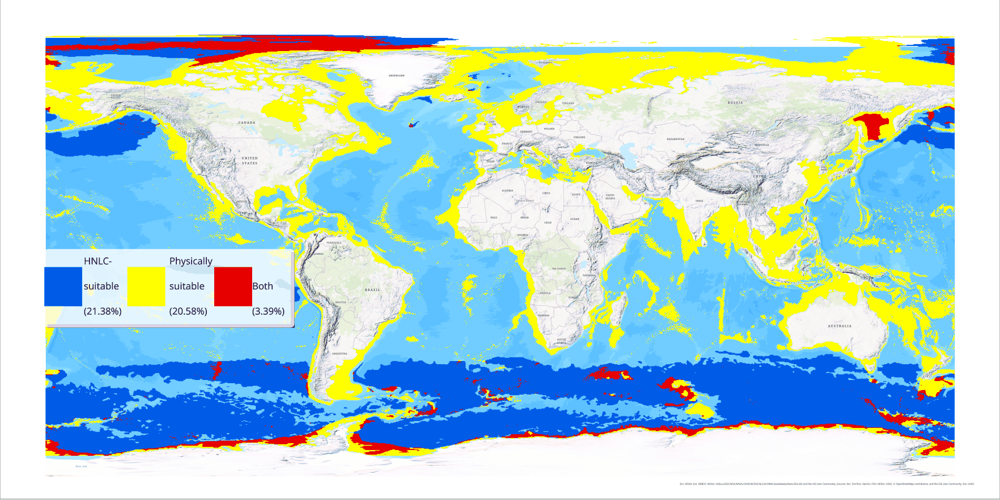
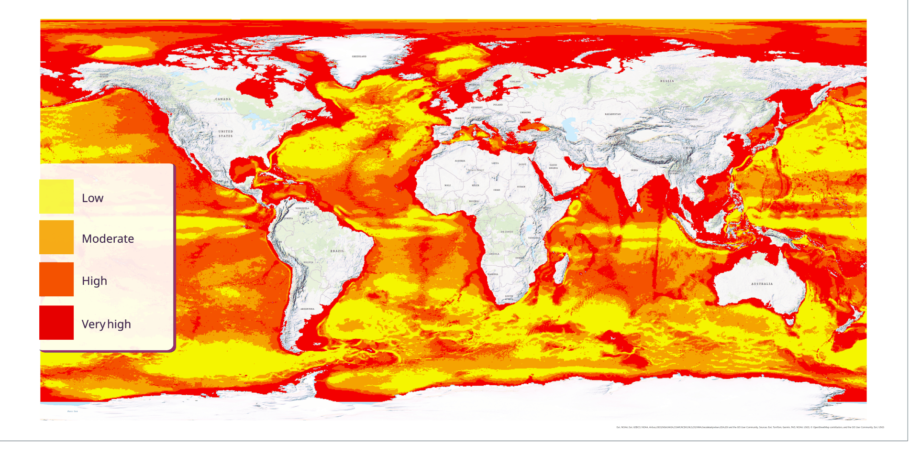
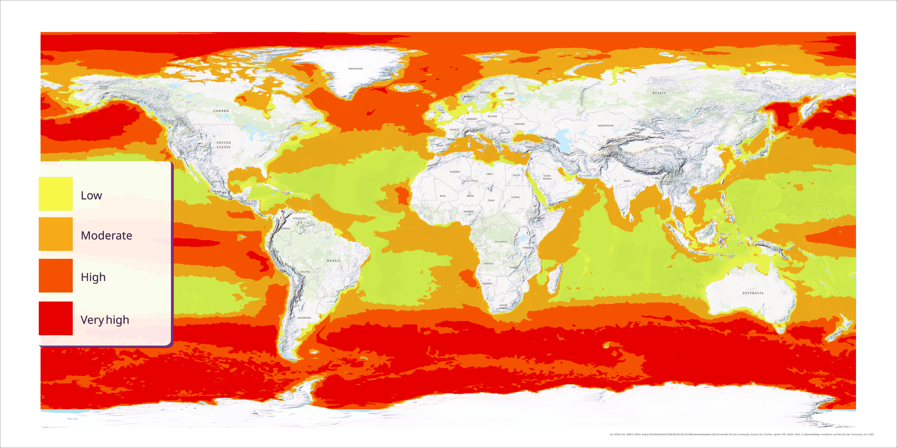

Where Could the Ocean Take Up More Carbon?
Ocean alkalinity enhancement and iron fertilization are both place-dependent, and they depend on different places. Mapping each globally on the same 0–1 scale shows how little ocean satisfies both — and why the choice is where, not which.

The question
Marine carbon removal is usually argued in the abstract — whether a method works, not where. Both leading approaches are strongly place-dependent, and neither travels.
Ocean alkalinity enhancement adds alkaline material to surface seawater, shifting the carbonate system so the ocean draws down more atmospheric CO2. Whether that works at a given site is a question of physics: how long the alkalinity stays in contact with the atmosphere before it is diluted or subducted, and how fast gas exchange proceeds while it is there. Iron fertilization is a question of biogeochemistry: it does something only in water that already holds surplus nutrients but lacks the iron to use them.
Mapping both globally on one scale turns which method is better into which method, and where.
The headline result
Finding
Each index, thresholded, covers roughly a fifth of the world ocean — 21.38% HNLC-suitable, 20.58% physically suitable for alkalinity enhancement. If the two were independent you would expect them to coincide on about 4.4% of it. They overlap on 3.39%.
So the two approaches are close to spatially disjoint, and mildly anti-correlated rather than merely unrelated. The waters that suit iron addition — cold, high-nitrate, deep-mixed Southern Ocean — are largely the waters whose deep mixed layers and fast currents make them poor for alkalinity. These are not competing options for the same sites. They are options for different oceans.
Index 1 — Ocean alkalinity enhancement
The controlling variable for OAE is not chemistry but circulation. Alkalinity only draws down carbon while it remains in the surface layer exchanging gas with the atmosphere; if it is diluted below detection or subducted beneath the mixed layer, the uptake never happens. That makes site selection a physical-oceanography problem.
Guo et al. (2025), from Heather Kim's group at WHOI, make this explicit: they release passive dye tracers in a circulation model of the US Northeast Shelf and score sites on how the dye behaves — surface spread, lateral displacement, upper-ocean retention, gas transfer velocity, residence time — combining them into a Site Selection Index. Their result is strongly seasonal, with summer stratification retaining alkalinity near the surface and Wilkinson Basin scoring best.
A dye-tracer simulation cannot be run globally without a global circulation model, so this index approximates that logic with static proxies for the same physics:
- Mixed layer depth — shallow keeps alkalinity in contact with the atmosphere; inverted
- Wind speed — drives gas transfer velocity; higher is better
- Surface current speed — fast flow disperses the plume; inverted
- Bathymetry — an optimal middle band, favouring shelves over both the abyss and the very shallow
- Distance to shipping lanes and ports — delivery is a real constraint; inverted
Layers come from GEBCO bathymetry, the Copernicus physical reanalysis for mixed layer depth and current components, ERA5 winds via Earth Engine, and global maritime traffic density.

Index 2 — Iron fertilization in HNLC waters
Roughly a third of the world ocean is high-nutrient, low-chlorophyll: nitrate sits unused at the surface because iron, not nitrogen, limits growth. This is not a hypothesis — twelve mesoscale iron-enrichment experiments between 1993 and 2005, synthesised by Boyd et al. (2007), showed unambiguously that adding iron triggers a bloom in these waters. The original observation goes back to Martin & Fitzwater (1988) in the subarctic Pacific, and Moore et al. (2013) map where nutrient limitation of each kind actually falls.
What those experiments did not establish is durable carbon storage — most of the bloom carbon was remineralised near the surface rather than exported to depth. The index therefore identifies where the biological precondition holds, not where sequestration would succeed. It looks for all three conditions at once:
- High nitrate — surface
no3, higher is better - Low chlorophyll — surface
chl, inverted - Low dissolved iron — surface
fe, inverted
All three come from the Copernicus Marine biogeochemistry reanalysis
(GLOBAL_MULTIYEAR_BGC_001_029) at the surface layer, downloaded as NetCDF
and reduced from a time series to annual-mean single-band rasters before the overlay.

Why graded, not binary
Method note
An obvious way to build either index is a threshold — nitrate above some cutoff, chlorophyll below another — producing a suitable/unsuitable mask. That is easy to compute and misleading to read: it hides how close a cell was to the cutoff, and it makes the result hostage to numbers chosen somewhat arbitrarily.
Instead each input is rescaled to a 0–1 membership surface and combined with fuzzy overlay, giving a continuous suitability gradient. A binary map can still be produced afterwards by thresholding the index — but the gradient comes first, and the threshold becomes an explicit, visible choice rather than a buried one.
Workflow
- Download global surface fields as NetCDF from Copernicus Marine; pull wind from Earth Engine.
- Load the NetCDF with Make Multidimensional Raster Layer, then reduce the time dimension to an annual mean so each variable becomes a single band.
- Rescale every input with Fuzzy Membership, choosing the function to match the variable's behaviour — linear where more is simply better, inverted where less is, and a Gaussian or MSLarge shape for bathymetry, where the optimum sits in the middle.
- Combine the members within each index using Fuzzy Overlay.
- Symbolise both indices on an identical 0–1 ramp and lay them out together for comparison.
Validating the result
The iron index has a built-in sanity check: oceanographers already know where the major HNLC regions are. The Southern Ocean, the equatorial Pacific, and the subarctic North Pacific should light up, and the subtropical gyres — nutrient-starved and iron-replete — should stay dark. A map that fails that test has a problem upstream, usually in the unit handling or the time reduction, and it is worth catching before any interpretation.
A note on what this map is and is not
These are physical and biogeochemical suitability surfaces. They say nothing about whether either intervention should happen. Ecological consequence, governance, monitoring and verification, and the question of who decides are all outside the frame — and all of them would narrow the bright areas on these maps considerably.